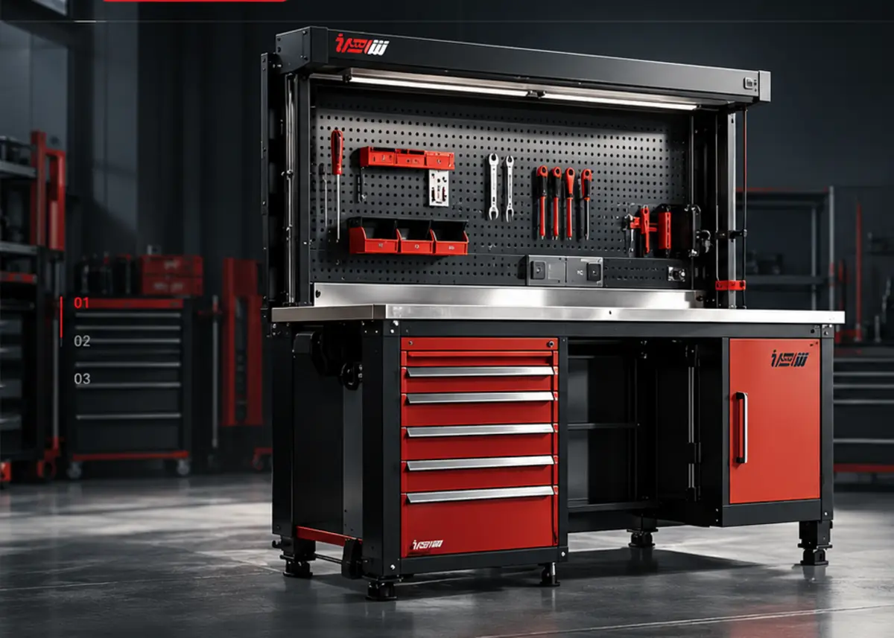

فضای کار، منظمتر
وقتی هر چیز جای خود را دارد، تمرکز میتواند روی کار بماند.
تجهیزات حرفهای فضای کار
میز کار صنعتی WBG905؛ ترکیبی از استحکام، نظم و کارایی برای محیطهای حرفهای. طراحی شده تا ابزارها همیشه در دسترس باشند و تمرکز شما روی کار باقی بماند.
جایگاه ویدئوی معرفی محصول
ما در شاهرخ، با تمرکز بر طراحی و تولید سیستمهای کارگاهی، به دنبال ایجاد محیطهایی کاری منظم، کارآمدتر و حرفهایتر هستیم. محصولاتی که در دل محیطهای واقعی صنعتی متولد شدهاند و برای استفاده طولانیمدت و حرفهای ساخته میشوند.
بیشتر درباره شاهرخ
۰۳ / محصول شاخص
WBG905 / میز کار صنعتی
WBG905
وقتی هر چیز جای خود را دارد، تمرکز میتواند روی کار بماند.
ساختار روشن، حرکت بین وظایف را سادهتر و طبیعیتر میکند.
یک پایهی جدی برای کار روزمره، بدون ادعای اضافه.
۰۴ / خانواده محصولات
محصولات شاهرخ برای ساختن محیطهای کاری منسجم کنار هم قرار میگیرند.
۰۵ / در حرکت
حرکت درست بین ابزار و وظیفه، از فضایی شروع میشود که برای کار طراحی شده باشد.
جایگاه ویدئوی دوم
۰۶ / توانمندیها
راهحلهایی که از واقعیت کار شروع میشوند، نه از تزئینات.
چیدمانی روشن برای کاهش اصطکاک در مسیر کارهای روزانه.
پایهای منعطف برای نیازهایی که در طول زمان تغییر میکنند.
ترکیب عملکرد، تناسب و کیفیت در یک زبان بصری منسجم.
جایگاه ویدئوی سوم
۰۷ / جزئیات
وقتی محیط درست حل شده باشد، کار میتواند در مرکز توجه بماند.
۰۸ / شاهرخ
یک تجربهی حرفهای از برندی که با زبان محصولش صحبت میکند.
۰۹ / قدم بعدی
برای شناخت محصولات و راهحلهای شاهرخ با ما در تماس باشید.
تماس با شاهرخ